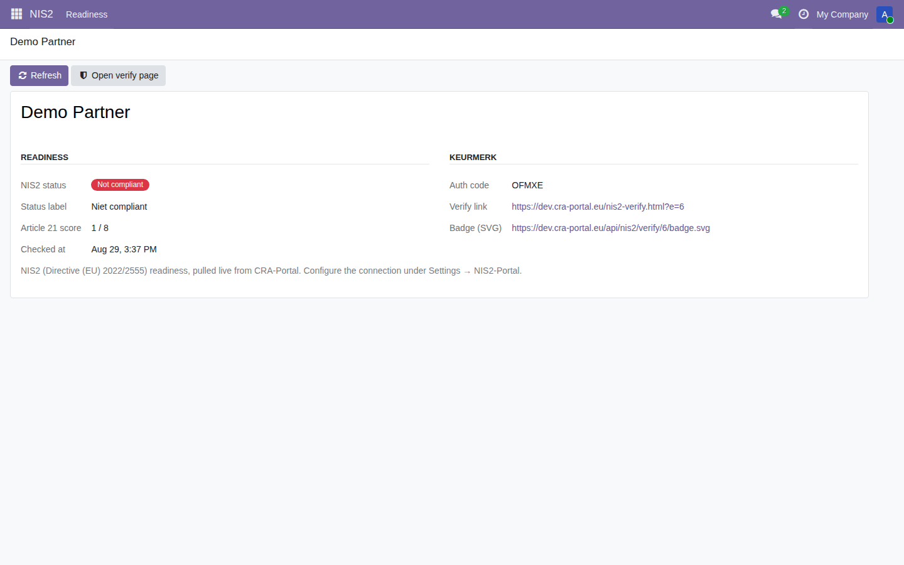
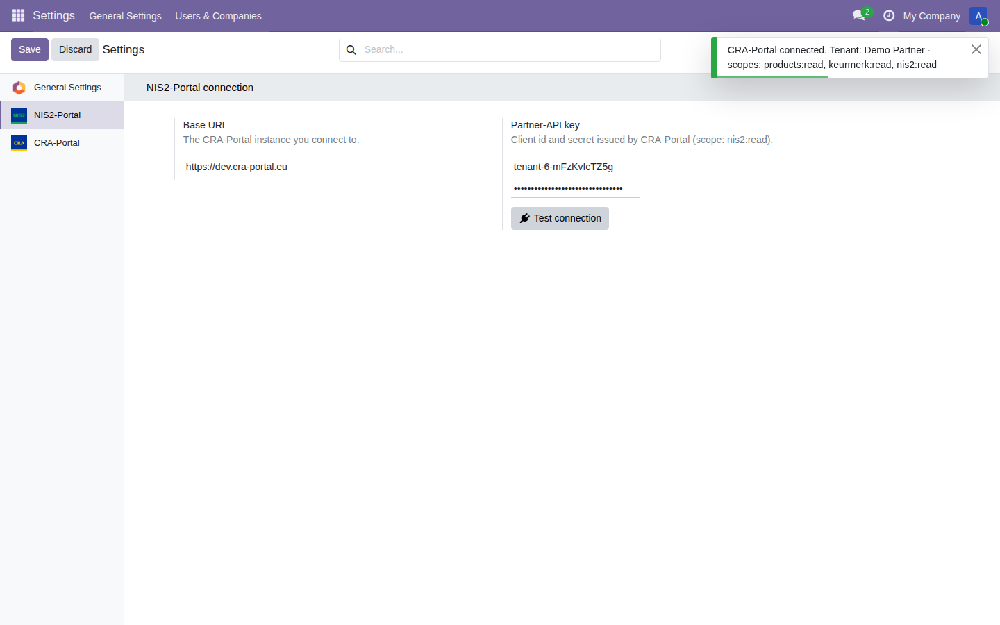

This module is a connector to the CRA-Portal service, which runs the NIS2 (Directive (EU) 2022/2555) assessment, and requires an active CRA-Portal account and Partner-API key to show data. Configure it under Settings → NIS2-Portal and press Test connection.
Data sent: the connector sends only your organisation identifier, over HTTPS, authenticated by your Partner-API key, and reads back your NIS2 status. No end-customer, financial or personal data is transmitted. You keep ownership of your data at all times.
This module surfaces readiness status; it is not legal or security advice.